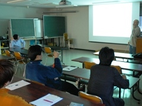
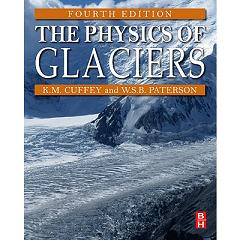

グループセミナー

氷河・氷床グループのメンバーが自らの研究を発表します。
研究室にお越しいただいた海外研究者や当研究室出身者に講話して頂くこともあります。
初回は新入生に学部時代にやっていたことなど、これまでの経験を自己紹介して頂きます。
不定期開催 低温科学研究所講義室
| 日時 | 発表者 | 題目 |
| 2011/11/21 | 福田 武博 | Glaciological Expedition on Langhovde Glacier, Antarctica, 2012 |
| 2011/11/21 | 杉山 慎 | On the upcoming expedition to Antarctica |
| 2011/11/7 | Heintz Blatter | |
| 2011/10/27 | Thomas Golles | The transport and effects of aerosols on glaciers |
| 2011/7/22 | 西村 大輔 | Basal ice flow regime and mechanisms in Rhonegletscher, Switzerland |
| 2011/6/21 | 大藪 幾美 | Chemical composition of sulfate particles during the Termnation1 in the Dome Fuji (Antarctica) ice core |
| 2011/6/7 | 中田 三香子 | Clarification of coloring mechanism in diamond dust |
| 2011/5/24 | 佐藤 建 | Evolution of the Antarctic ice sheet caused by changes in ice shelf condition |
| 2011/4/26 | 榊原 大貴 | Proof experiment of clean energy for utilizing regional resources (地域資源利用のためのクリーンエネルギーの実証調査) |
輪読会

氷河に関する基本的知識を身につけるために、みんなで集まって勉強会を行います。
現在読み進めているものは、氷河の物理学を扱ったものとしてはでもっともポピュラーな W.S.B. Paterson の The Physics of Glacier (4th ed.)です。
学生が担当された分を読み込み、参加者に説明しながら一緒に理解していきます。
毎週水曜日 11:00-12:00 氷河・氷床グループ セミナー室
§1. Introduction
§2. Transformation of Snow to Ice
§15. Ice Core Studies
§8. The flow of Ice Masses
雑誌会
雪氷寒冷圏コースに属する学生が、自らの研究テーマに関連する比較的新しい国際論文を紹介します。
修士の学生は年に２回、博士の学生は年１回の発表です。
不定期金曜日 10:30-12:00 低温科学研究所講義室
| 日時 | 発表者 | 紹介論文 |
| 2011/11/18 | 榊原 大貴 | A physically based calving model applied to marine outlet glaciers and implications for glacier dynamics F. M. Nick, C. J. Van der Veen, A. Vieli, D. I. Benn |
| 2011/10/7 | 大藪 幾美 | The last deglaciation: timing the bipolar seesaw J. B. Pedro, T. D. van Ommen, S. O. Rasmussen, V. I. Morgan, J. Chappelaz, A. D. Moy, V. Masson-Delmotte, M. Delmotte |
| 2011/7/22 | 大藪 幾美 | Links between Patagonian Ice Sheet fluctuations and Antarctic dust variability during the last glacial period (MIS 4-2) Jérôme Kaiser, Frank Lamy |
| 2011/7/22 | 榊原 大貴 | Iceberg calving during transition from grounded to floating ice: Columbia Glacier, Alaska Fabian Walter, Shad O’Neel, Daniel McNamara, W. T. Pfeffer, Jeremy N. Bassis, and Helen Amanda Fricker |
| 2011/6/24 | 中田 三香子 | Evidence of calcium carbonates in coastal (Talos Dome and Ross Sea area) East Antarctica snow and firn : Environmental and climatic implivations M. Sala, B. Delmonte, M. Frezzotti, M. Proposito, C. Scarchilli, V. Maggi, G. Artioli, M. Dapiaggi, F. Marino, P.C. Ricci, G. De Giudici |
| 2011/6/3 | 西村 大輔 | Sediment evacuation and glacial erosion rates at a small alpine glacier Catherine A. Riihimaki, Kelly R. MacGregor, Robert S. Anderson, Suzanne P. Anderson, and Michael G. Loso |
| 2011/5/13 | 佐藤 建 | Ice-stream response to ocean tides and the form of the basal sliding law G. H. Gudmundsson |
| 2011/5/13 | 福田 武博 | Mountain glacier velocity variation during a retreat/advance cycle quantified using sub-pixel analysis of ASTER images Frédéric HERMAN, Brian ANDERSON, Sébastien LEPRINCE |